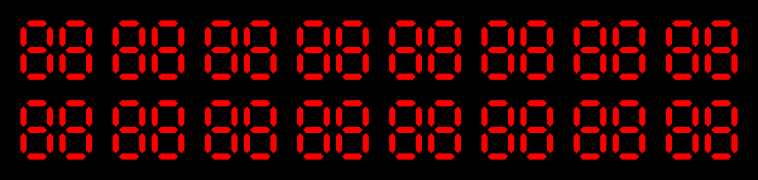

author: niplav, created: 2019-04-24, modified: 2020-01-24, language: english, status: finished, importance: 4, confidence: possible
Pipelines are an integral part of the Unix operating system. They come in different variants (FIFOs and anonymous pipes) and have many applications. Here I show how to abuse simple text files and unnamed pipes to create cycles of data flow.
A pipe ring has the following structure:
$ echo init >a
$ tail -f a | [filters] >>a
Usually, a contains some initialization values. These initialization
values are then written into the pipeline, transformed by the filters,
and concatenated to the file. tail -f then reads those new lines from
the file in the order that they were generated, and new data is produced
by the filters.
The simplest pipe ring uses no filters at all:
$ echo test >a
$ tail -f a >>a
It simply fills the disk with a file containing the line "test".
To stop the unconstrained use of hard disk memory, one can use sed:
$ echo test >a
$ tail -f a | stdbuf -oL sed '100q' >>a
$ wc -l a
101
stdbuf is needed because on most system, the byte streams flowing through
pipes are buffered. This means that if the command is tail -f a | sed
'100q' >>a instead, sed consumes all input, writes to the buffered
output (which has usually a size greater than the length of the line,
on my system it is #define BUFSIZ 1024). bufsiz sets the output to line
mode, which allows the sed output to be propagated without delay.
In his book “Gödel, Escher, Bach: An Eternal Golden Braid” Douglas Hofstadter describes a logical system called MU:
The first thing to say about our formal system – the MIU-system – is that it utilizes only three letters of the alphabet: M, I, U. That means that the only strings of the MIU- system are strings which are composed of those three letters.
– Douglas Hofstadter, “The MU-puzzle“ in “Gödel, Escher, Bach: An Eternal Golden Braid” p. 1, 1994
There is a starting string, and four rules to modify this string:
RULE I: If you possess a string whose last letter is I, you can add on a U at the end.
By the way, if up to this point you had not guessed it, a fact about the meaning of "string" is that the letters are in a fixed order. For example, MI and IM are two different strings. A string of symbols is not just a "bag" of symbols, in which the order doesn't make any difference. Here is the second rule:
RULE II: Suppose you have Mx. Then you may add Mxx to your collection.
What I mean by this is shown below, in a few examples.
From MIU, you may get MIUIU.
From MUM, you may get MUMUM.
From MU, you may get MUU.So the letter 'x' in the rule simply stands for any string; but once you have decided which string it stands for, you have to stick with your choice (until you use the rule again, at which point you may make a new choice). Notice the third example above. It shows how, once you possess MU, you can add another string to your collection; but you have to get MU first! I want to add one last comment about the letter 'x': it is not part of the formal system in the same way as the three letters 'M', 'I', and 'U' are. It is useful for us, though, to have some way to talk in general about strings of the system, symbolically-and that is the function of the 'x': to stand for an arbitrary string. If you ever add a string containing an 'x' to your "collection", you have done something wrong, because strings of the MIU-system never contain "x" “s”! Here is the third rule:
RULE III: If III occurs in one of the strings in your collection, you may make a new string with U in place of III.
Examples:
From UMIIIMU, you could make UMUMU.
From MIIII, you could make MIU (also MUI).
From IIMII, you can't get anywhere using this rule.
(The three I's have to be consecutive.)
From MIII, make MU.
– Douglas Hofstadter, “The MU-puzzle“ in “Gödel, Escher, Bach: An Eternal Golden Braid” p. 2, 1994
Hofstadter poses a challenge: starting with the string "mi", he asks whether the string "mu" can be constructed.
An awk script implements the four rules:
/i$/ { print($0 "u") }
/^m/ { s=substr($0, 2); print("m" s s) }
/iii/ { i=split($0, a, "iii")-1; for(c=1; c<=i; c++) print(gensub("iii", "uu", c)) }
/uu/ { i=split($0, a, "uu")-1; for(c=1; c<=i; c++) print(gensub("uu", "", c)) }
One can now write an rc script to implement a pipe ring that generates mu expressions.
#!/usr/bin/env rc
fn apr{
stdbuf -oL awk '/i$/ { print($0 "u") }
/^m/ { s=substr($0, 2); print("m" s s); }
/iii/ { i=split($0, a, "iii")-1; for(c=1; c<=i; c++) print(gensub("iii", "uu", c)) }
/uu/ { i=split($0, a, "uu")-1; for(c=1; c<=i; c++) print(gensub("uu", "", c)) }'
}
tail -f mu | apr | stdbuf -oL grep -E '^.{,80}$' | stdbuf -oL awk '!a[$0]++' >>mu
awk '!a[$0]++' is taken from
iridakos 2019.
Also, stdbuf doesn't work with rc functions, so it has to be written
directly into the function. grep is used to prevent extremely long
lines from forming through the repeated application of the first rule.
Executing the script gives the desired result:
$ echo 'mi' >mu
$ ./muring
^C
$ # after waiting for half a minute
$ head mu
mi
miu
mii
miuiu
miiu
miiii
miuiuiuiu
miiuiiu
miiiiu
miiiiiiii
$ grep '^mu$' mu
$ # nothing there
This of course does not solve the puzzle posed by Hofstadter, after all, there could be a longer and more complex derivation that takes more time to generate. But in either case, one can rule out a simple and short derivation of "mu" from "mi".
This also works for creating a list of links that start from a given web page (albeit only partially and not completely reliably).
The code for this is quite straightforward:
#!/usr/bin/env rc
# download a web page and extract all links in it
fn getl {
while(true)
{
curl `{read} |
grep -o '<a href="[^"]*"' |
sed 's/^<a href="//;s/"$//' |
grep '^https\?://'
}
}
tail -f links | getl | stdbuf -i0 -oL awk '!a[$0]++' >>links
This code should be understandable: The file links contains the starting
web page to be crawled. This is then curled and all outgoing links
are extracted with a sequence of filtering out non-links using grep
and sed. The results are then filtered for results that were already
obtained, and appended to the links file again–an elegant demonstration
of a pipe ring.
$ echo https://en.wikipedia.org/wiki/Main_Page >links
$ ./crawler
^C
$ tail links
https://en.wikipedia.org/wiki/Main_Page
https://lists.wikimedia.org/mailman/listinfo/daily-article-l
https://wikimediafoundation.org/our-work/wikimedia-projects/
https://commons.wikimedia.org/wiki/
https://www.mediawiki.org/wiki/
https://meta.wikimedia.org/wiki/
https://en.wikibooks.org/wiki/
https://www.wikidata.org/wiki/
https://en.wikinews.org/wiki/
https://en.wikiquote.org/wiki/
To use a more superfluous and fun example, one can think of hexadecimal strings of a certain length as being closed under a given hash function. For example, the set of the hexadecimal strings of length 32 is closed under the MD5 hash sum. That means that applying a hash function to an element of this set results in the member of a set.
The probability that there exists a hexadecimal string of
length 32 that is it's own MD5 hash sum is approximately
$1-\frac{1}{e}≈63\%$ (see this stackoverflow
question).
This can be illustrated easily with a toy example: the set of hexadecimal strings with length 2, and a hash sum that is simply the first two characters of the MD5 sum of the input (here called f2md5sum). Then one can try to find such a fixed point with a line of rc:
$ for(i in `{seq 0 255 | awk '{ printf("%.2x\n", $0) }'}) { j=`{echo $i | md5sum | grep -o '^..'}; if(~ $i $j) echo $i $j }
6b 6b
$ md5sum
6b
6bf60475e53919fb39d07c0bb66c9c6e -
Since there are of course collisions in this simple hash function, it is very likely that for the set H of hexadecimal strings of length 2, there will be some elements h∈H so that there is no element v∈H so that f2md5sum(v)=h.
But there are cycles for this set and operation: sequences of strings h₁,h₂,h₃,…,hₙ so that f2md5sum(h₁)=h₂, f2md5sum(h₂)=h₃, …, f2md5sum(hₙ)=h₁. One can find such cycles by writing a little script using a pipe ring:
#!/usr/bin/env rc
fn oipl {
while(read | eval $*) {}
}
tail -f sums | oipl md5sum | stdbuf -i0 -oL grep -o '^..' >>sums
It gives the desired results:
$ echo 6b >sums
$ ./hashring
$ head sums
6b
6b
6b
6b
6b
6b
6b
6b
6b
6b
$ echo cc >sums
$ ./hashring
$ head -50 sums
cc
87
07
30
d5
16
5b
05
b1
08
43
f0
92
ed
4b
71
72
8f
ad
33
4f
aa
d4
8b
e4
0a
87
07
In the last example, one can see such a cycle starting with 87 and ending with 0a, as well as a collision: cc and 0a both have the hash 87.
Theoretically, one could use this method to find cycles for longer hash sums, and while it would be interesting to find a string that is it's own SHA1 sum, actually doing it seems like a frivolous waste of energy and computing power.
Fortunately for me, somebody else has done this already, creating a gif that displays its own MD5 sum (created by spq):
